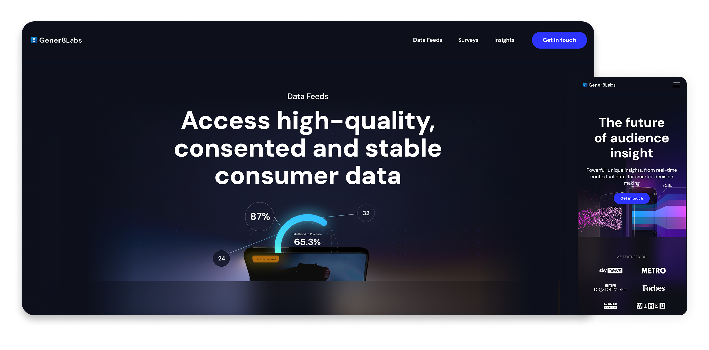
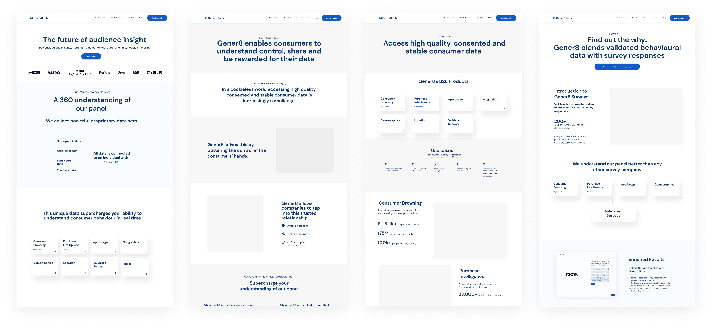

The context
Making B2B data feel clear.
Gener8 Labs is a B2B company that specialises in collecting and selling proprietary data sets. The data, gathered through the Gener8 app and browser extension, is anonymised and then used in an intuitive tool that empowers non-technical clients to make data-driven decisions.
I was responsible for designing the website and then bringing it to life using Webflow, ensuring a seamless user experience that clearly communicates the value of their data solutions.
The problem
A young brand that needed a clear face.
Gener8 Labs needed a website to communicate its B2B data capabilities to potential partners and clients. At the same time, the Labs brand was in its infancy and lacked a clear visual identity.
The process
Wireframes with the sales team, then build in Webflow.
I started with wireframes of the content and layouts. The content came from our B2B sales team, and I worked with them to make sure the site felt easy to understand, but still kept the right tone for B2B businesses.
I then partnered closely with Gener8's Creative Director to establish the overall aesthetic, balancing trustworthiness with innovation. Once the design direction was decided, I designed the pages in Figma then built the website end-to-end in Webflow.

What it needed to deliver
Credible, cohesive, and easy to update.
Credibility
Design a visually engaging website to position Gener8 Labs as a credible B2B partner.
Brand foundation
Support brand-building with a strong, cohesive visual identity.
Webflow build
Develop the site with clean structure and responsive behaviour.
The solution
A site that became the brand foundation.
Delivered a polished, responsive website that showcased Gener8 Labs' capabilities while establishing a clear and consistent visual identity. The site was built entirely in Webflow, allowing for flexible updates and rapid iteration.
The final product successfully positioned Labs as a serious player in the B2B data space and became a foundation for future brand development.